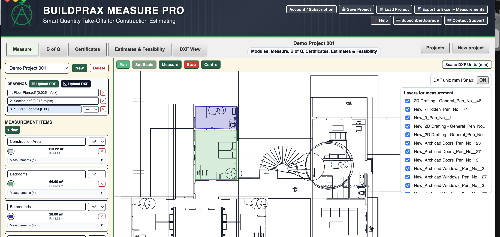

Linked Measurable Items
Capture takeoff values and connect them to measurable bill items for clearer quantity control.
Construction Takeoff Workflow Platform
Buildprax supports practical CAD and PDF takeoff workflows. Measure both file types in one project, use DXF layers and snapping, then connect quantities to BoQs, estimates, and certificates.
Designed for practical construction estimating and quantity workflows.
For search intent like measure DXF drawings, CAD takeoff, PDF takeoff workflow, and construction takeoff software, this page outlines how the process works in Buildprax.

Capture takeoff values and connect them to measurable bill items for clearer quantity control.
Move quantities into BoQ structures for pricing, comparisons, and project reporting.
Use linked quantity flows to support estimate outputs and monthly certificate workflows.
This workflow page is a focused entry point into the wider Buildprax platform, including measurement, Bills of Quantities, certificates, and feasibility workflows.